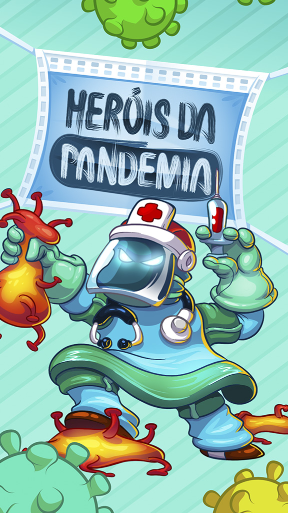
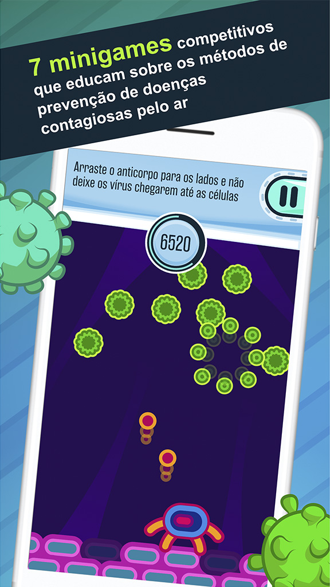
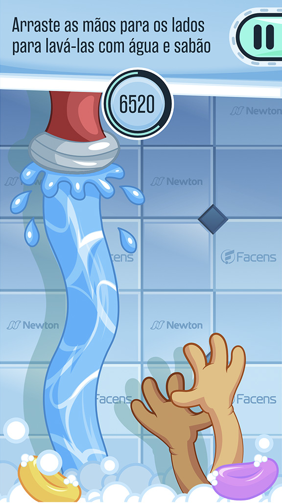
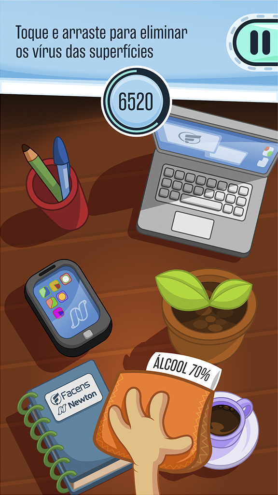
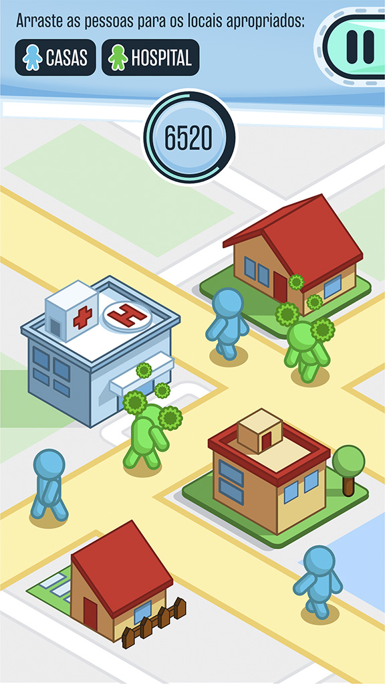
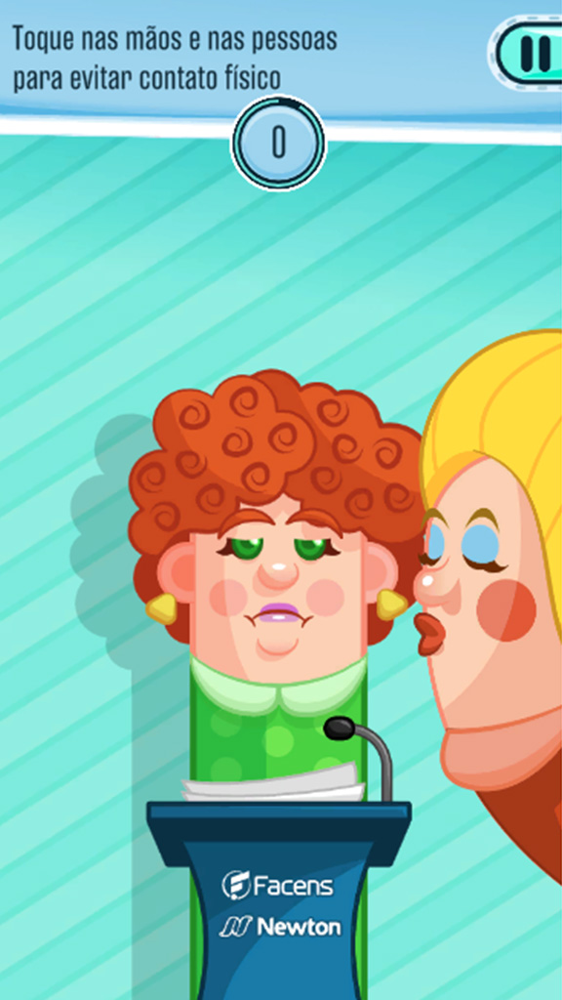
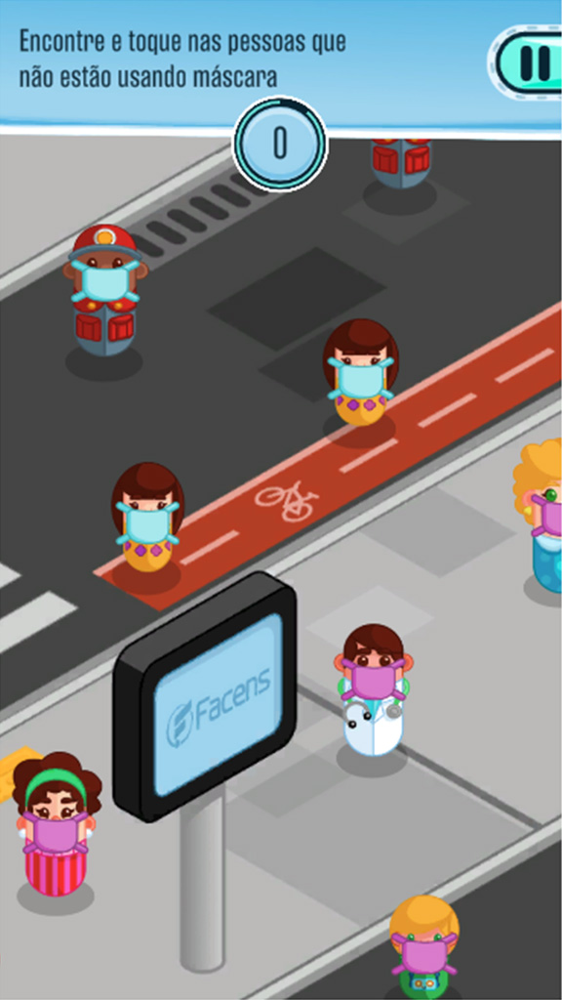

JF
PROFESSIONAL PROJECTS
PERSONAL WORK
TUTORIALS
ABOUT ME!
Heróis da Pandemia
Category
Casual/Educational
Platform(s)
Mobile/Web
Engine
Unity
Languages Used
C#/JavaScript
About
O jogo gratuito Heróis da Pandemia tem como objetivo conscientizar o público sobre a propagação da COVID-19 de forma didática e divertida. Desenvolvido pelo Centro Universitário Facens em parceria com o Centro Universitário Newton Paiva, o game educa o jogador sobre as formas de transmissão do novo coronavírus, além de apresentar métodos de prevenção.
Ao todo, são sete mini games:
Lavar as mãos
Desinfecção
Distanciamento social
Uso de máscaras
Evitar tocar o rosto
Fique em casa/quarentena
Sistema imunológico







❮
❯